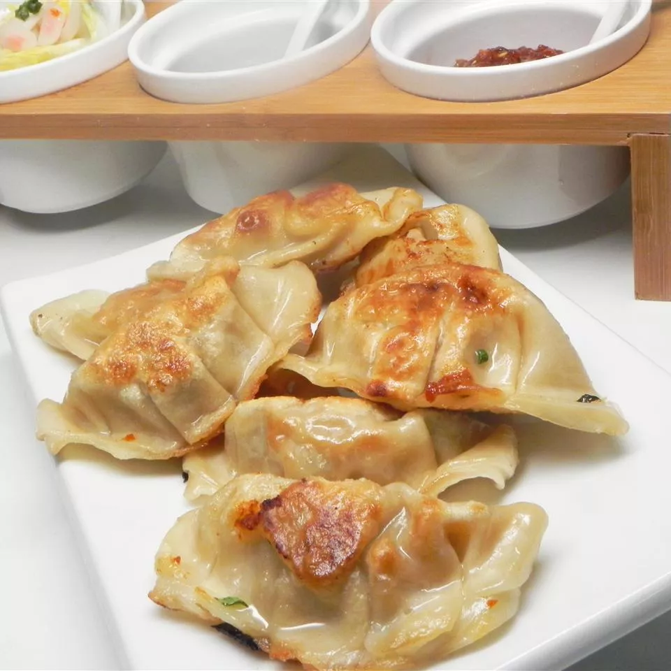

Taiwanese Dumpling

Description
Ba wan, a classic Taiwanese dumpling, is now considered the country's
national food. It's rice flour and potato starch dough stuffed with pork, bamboo, and
mushrooms. Ba wan is usually eaten with a sweet and spicy sauce or a savoury broth, and it
can be steamed or fried.
Ingredients
- 2 heads napa cabbage, finely chopped
- 1 bunch cilantro, chopped
- 2 pounds ground pork
- 2 egg whites
- 3 jalapeno peppers, minced
- 1 (2 inch) piece ginger root, peeled and minced
- 1 tablespoon sesame oil
- salt and ground black pepper to taste
- 3 (16 ounce) packages potsticker wrappers, or more as needed
Steps
-
Spread cabbage and cilantro over a clean dish towel. Gather up towel
and squeeze out as much moisture from the cabbage as possible.
-
Transfer cabbage and cilantro to a bowl. Add pork, egg whites, jalapeno
peppers, ginger, and sesame oil. Mix thoroughly with your hands. Season
with salt and pepper.
-
Cover 2 baking sheets with waxed paper. Fill a small bowl with water.
-
Hold a potsticker wrapper in the palm of your hand. Place a tablespoonful
of the pork mixture in the center. Dip a finger in water and use it to wet
the edges of the wrapper. Fold up edges and pinch together to seal. Transfer
dumpling to a prepared baking sheet. Repeat with remaining wrappers and pork mixture.
-
Freeze dumplings until firm, about 2 hours. Transfer to large resealable plastic bags.